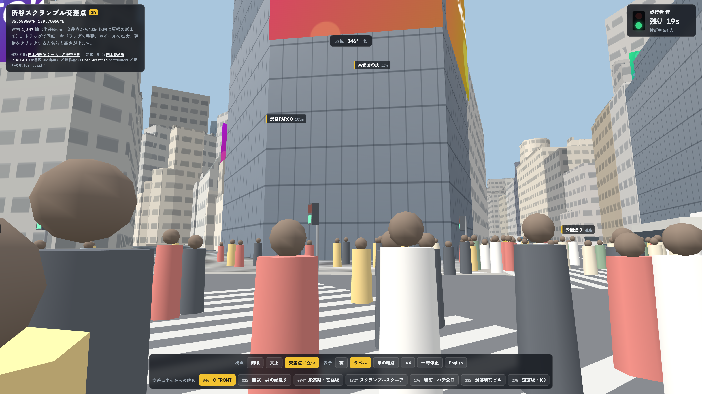

Shibuya Scramble Crossing 3D
Simulator Desktop
世界で最も有名な交差点「渋谷スクランブル交差点」とその周辺（半径650m）を3Dで忠実再現。国土交通省PLATEAU実測データによる精密建築群、実際の信号サイクルに完全同期した歩行者・車両トラフィック、JR山手線高架鉄道運行、交差点中心（目の高さ1.6m）の7方位ビュー、昼夜切替を完全ローカルで体験できる至高のデスクトップシミュレーター。
歩行者 青信号 (一斉斜め横断)
最大1,200人規模の歩行者が一斉に斜め横断を開始。リアルタイムな人数カウントと衝突回避AIが稼働。
交差点中心・目の高さ1.6m 7方位ビュー
交差点の真ん中に立った歩行者目線（高さ1.6m）から、渋谷の象徴的ランドマーク群へワンタッチで視点を切り替え。自由なオービット回転や見上げ・見下ろしにも完全対応。

交差点の北側にそびえる渋谷の象徴。巨大LEDスクリーン「Q'S EYE」と曲線ガラスファサードをLOD2形状で完全再現。
なぜデスクトップ版（DL版）なのか？
ブラウザ版では到達できない圧倒的な描写力・レスポンス・完全ローカルセキュリティを実現。
国土交通省 PLATEAU 実測 3D 都市モデル (LOD2)
渋谷区最新のPLATEAU実測データに基づき、半径650mの建築群を実寸の高さと屋根・庇・看板形状（LOD2）で緻密に描画。国土地理院のシームレス航空写真メッシュと完全同期。
実信号同期 ＆ 車両・鉄道AI
歩行者青（32秒）→点滅（6秒）→東西車道（22秒）→南北車道（21秒）の精密サイクル。JR山手線・埼京線が25秒間駅に停車し、5種類のアドトラックや路線バスが走ります。
シネマティック夜景 ＆ 4倍速・一時停止・車経路可視化
ビル窓明かりや大型ビジョンが輝く夜景モード、時間の4倍速送り、一時停止中の自由カメラ操作、路面上の車両走行軌道・停止線の可視化ラインを搭載。
完全オフライン・ゼロ遅延・プライバシー保護
外部通信を一切行わないため、セキュリティが厳しい環境やオフラインでもフル機能で動作。Universal BinaryによりM1/M2/M3/M4およびIntel Macで60FPS動作。
精密データを支える4大基盤
公的実測データと最適化エンジンが融合した次世代デジタルツイン設計。
国土交通省 PLATEAU
2025年度渋谷区CityGML実測モデルを採用。全棟が実測標高と実寸高さ。交差点400m以内は屋根や庇・看板まで精密なLOD2再現。
国土地理院 シームレス空中写真
Zoom 18（交差点周辺1.36km四方）およびZoom 16（広域4.5km四方）のオルソ補正済み高解像度航空写真メッシュをテクスチャ化。
OpenStreetMap 道路・鉄道路線
車道中心線・車線数・一方通行規制・JR山手線4線の線形データを正確にインポートし、スムーズなベジェ曲線交通ルートを生成。
WebGL / Metal 60FPS レンダラー
15MB未満の軽量パッケージながら、数万ポリゴンの建築群・数百の動的エージェントを秒間60フレームで極めて滑らかにレンダリング。
簡単導入 ＆ マウス・トラックパッド操作
1. DMGを開いてアプリへドラッグ
ダウンロードした .dmg ファイルを開き、Shibuya Crossing 3D のアイコンを「アプリケーション」フォルダへドラッグ＆ドロップします。
2. 初回起動（Gatekeeper解除）
初回起動時は、Finderでアプリを右クリック（control+クリック）→「開く」を選ぶか、システム設定の「プライバシーとセキュリティ」から「このまま開く」をクリックします。
3. 直感的な3Dカメラ操作
左ドラッグで回転、右ドラッグ（または2本指ドラッグ）で移動、ホイール（ピンチ）で拡大縮小。交差点目線では見回し操作が可能。
初回起動時のセキュリティについて
本アプリは公証サーバーへの通信を不要とする完全オフライン設計のため、macOSの「開発元を検証できません」画面が出ることがあります。上記「2. 初回起動」の手順で安全に起動できます（2回目以降は通常通りダブルクリックで起動します）。
Shibuya Scramble Crossing 3D
一度の購入で永久利用可能・追加課金なしの完全買い切り型デスクトップアプリ
- macOS Universal Binary (Apple Silicon / Intel 両対応)
- 国土交通省 PLATEAU 実測 LOD2 建築データ内蔵
- 国土地理院 航空写真メッシュ ＆ JR山手線運行エンジン
- 交差点中心 1.6m 目線 7方位ビュー ＆ シネマティック夜景
- 完全オフライン動作・追加サブスクリプション課金ゼロ
- Stripe暗号化決済 ＆ 即時DMGダウンロード
• macOS: macOS 11 Big Sur 以降（M1/M2/M3/M4 & Intel Universal Binary）
• 通信環境: 不要（オフラインで完全動作 / 接続時は高品位Webフォント表示）
• データ出典: 国土地理院 航空写真 / 国土交通省 PLATEAU / OpenStreetMap
よくあるご質問 (FAQ)
macOS 11 Big Sur 以降に対応しています。Apple Silicon (M1 / M2 / M3 / M4) および Intelプロセッサの両方に最適化された Universal Binary です。
いいえ、購入後の動作にインターネット接続は一切不要です。オフライン環境でもすべての3Dモデル、トラフィック、視点切替がフルスピードで動作します。
一切ありません。150円の完全買い切りで、永久にご利用いただけます。
はい。都市計画の研究、プレゼンテーション、教育資料、映像背景などにご活用いただけます（出典：国土地理院 / 国土交通省 PLATEAU / OpenStreetMap）。